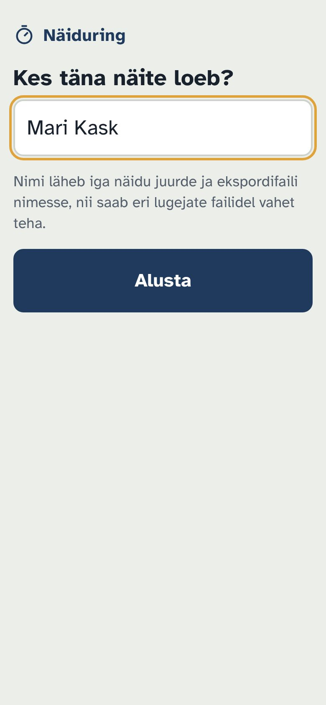
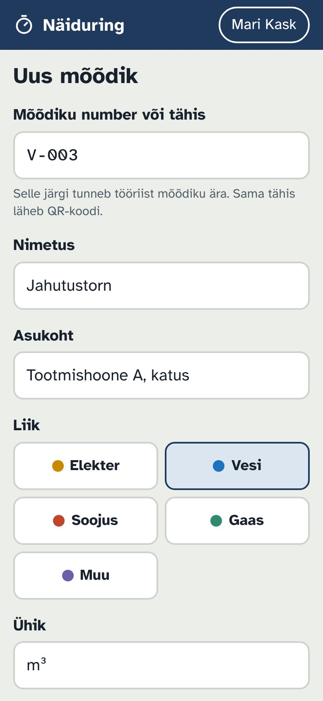
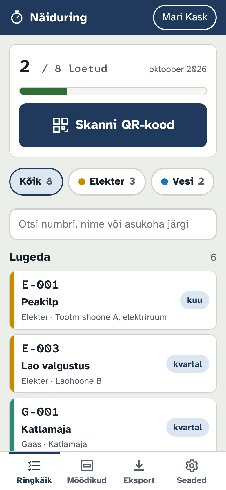
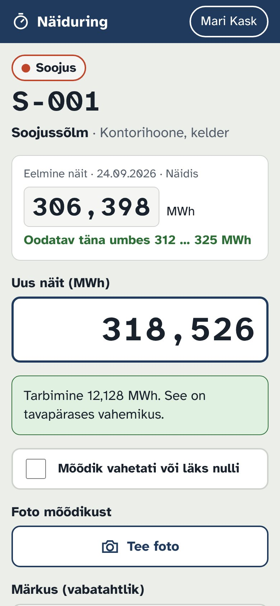
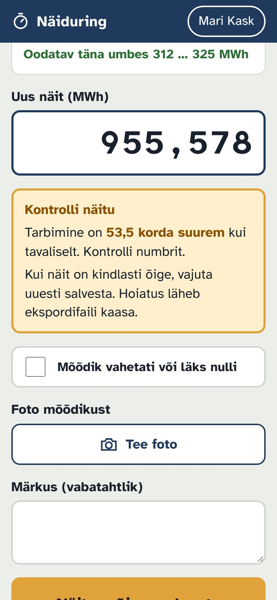
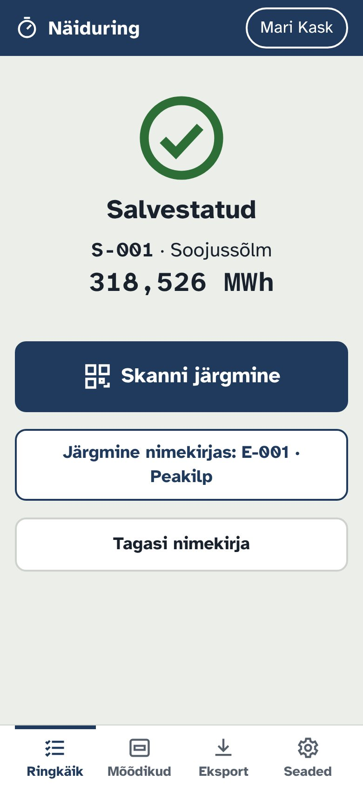
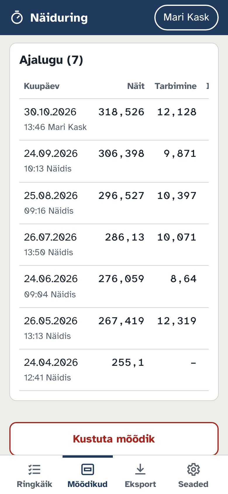
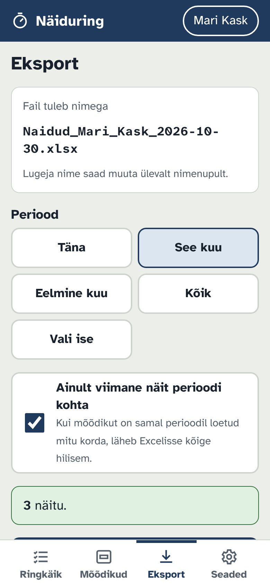
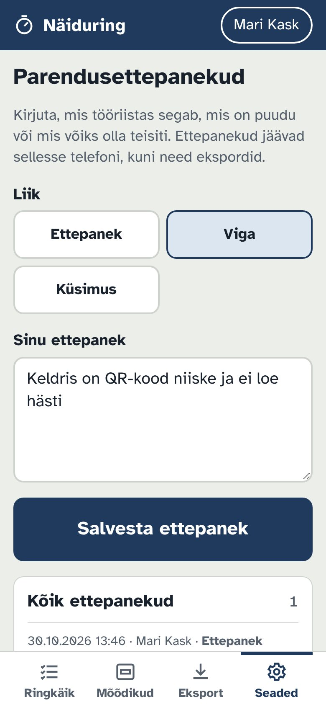

Mõõdikute näidud telefoniga, ilma paberi ja ümberkirjutamiseta. Skanni mõõdiku QR-kood, sisesta näit, tööriist kontrollib selle eelmise näidu vastu ja kuu lõpus saad kõik ühe Exceli failina.
Skanni kood telefoni kaameraga või kirjuta brauserisse:
silent-tools.github.io/
Kontot, parooli ega rakenduse paigaldamist pole vaja.
Kes käib mõõdikuid lugemas. Loe lehekülgi 2–6.
Kes seadistab mõõdikud ja paneb lugejate andmed kokku. Loe kogu juhend, eriti lk 7–8.
iPhone'i Safari võib veebilehe andmed kustutada, kui lehte pole 7 päeva avatud. Avaekraanile lisatud ikoon hoiab mõõdikud ja näidud alles. Vaata lk 2.

Vajuta jagamisnuppu (ruut noolega üles; uuemas Safaris kõigepealt ⋯). Keri alla, vali Lisa avakuvale ja Lisa.
Vajuta üleval paremal ⋮, vali Installi rakendus või Lisa avaekraanile ja kinnita.
Lisa leht järjehoidjatesse (Ctrl+D, Macis ⌘D).
iPhone'is on avaekraani ikoonil ja Safari vahelehel eraldi andmed. Ühes sisestatud näidud teises ei paista.
Kõik, mida sisestad, jääb sinu telefoni. Andmeid ei saadeta kuhugi enne, kui ise ekspordid.
Esimesel ringil antakse igale mõõdikule tähis, mille järgi tööriist teda edaspidi ära tunneb. Seda teeb tavaliselt objektijuht. Valida on kahe viisi vahel.
Seaded → Prindi tühjad QR-kleebised. Vali eesliide (nt M-), algusnumber ja kogus ning prindi. Kleebi iga kleebis ühele mõõdikule. Kui skannid kleebise esimest korda, pakub tööriist kohe selle numbriga mõõdiku registreerimist.
Mõõdikud → Lisa mõõdik. Kasuta näiteks mõõdiku tehase numbrit või oma tähist (E-012). Kui kõik on sisestatud, vajuta Mõõdikud → QR-sildid ja prindi igale mõõdikule nimega silt.
| Väli | Mida kirjutada |
|---|---|
| Number või tähis | Kohustuslik ja ainukordne. Sama tähis läheb QR-koodi. |
| Nimetus | Kohustuslik, nt Peakilp. |
| Asukoht | Hoone ja ruum, et teine lugeja selle üles leiaks. |
| Liik | Määrab värvi, ühiku ja filtri. Uusi liike saab lisada Seadetes. |
| Ühik | Täidetakse liigi järgi, vajadusel muuda. |
| Sagedus | Igapäevane, iganädalane, igakuine, kvartaalne, aastane või graafikuta. |
| Praegune näit | Vabatahtlik. Salvestatakse kohe esimese näiduna. |
| Märkus | Nt võti valvelauas. |

Sobib tavaline A4-printer ja A4-kleebiseleht. Niiskes keldris või soojussõlme juures kasuta ilmastikukindlat polüesterkleebist või kata paberkleebis läbipaistva teibiga.
Avalehel on kõik selle perioodi mõõdikud. Sageduse järgi ilmub mõõdik nimekirja uuesti iga päev, nädal, kalendrikuu või kvartal.
Näitab, mitu graafikuga mõõdikut on sel perioodil loetud, näiteks 2 / 8 loetud.
Need mõõdikud tuleb veel üle käia. Vajuta real, et avada näidu sisestus.
Avaneb noolest. Iga rea juures on lugemise kuupäev. Kollane silt Hoiatus tähendab, et näit salvestati hoiatusega.
Mõõdikud, mida loetakse vajaduse korral. Need ei lähe edenemisribasse.
Liigi nuppudega (Elekter, Vesi …) ja otsinguga saab nimekirja kitsendada, näiteks kui üks inimene loeb ainult veemõõdikuid.

Telefoni tavaline kaamera avab lingi brauseri vahelehel. iPhone'is ei näe see avaekraani ikooni andmeid ja mõõdik paistab registreerimata.


Tööriist võrdleb uut näitu eelmisega ja tavapärase tarbimisega. Hoiatus tuleb, kui:
• näit on väiksem kui eelmine;
• tarbimine on null;
• tarbimine on vähemalt 2 korda suurem kui tavaliselt;
• tarbimine on üle 60% väiksem kui tavaliselt.
Vaata number üle. Kui see on kindlasti õige, vajuta Näit on õige, salvesta. Hoiatus läheb Excelisse kaasa.
Tee linnuke Mõõdik vahetati või läks nulli. Selle näiduga tarbimist ei arvutata ja uus näit on järgmise korra võrdluse alus.

Pärast salvestamist saad valida:
Avab kohe kaamera.
Avab järgmise lugemata mõõdiku, kui kleebist pole.
Ringkäigu avalehele.
Ava sama mõõdik uuesti ja sisesta õige näit. Ekspordis läheb Excelisse perioodi viimane näit (vt lk 7), nii et vale number sinna ei jõua. Näidu võib üle kirjutada kasvõi iga päev.
Mõõdikud → vajuta mõõdikul. Kaardil on:
• Sisesta näit
• Muuda andmeid: nimetus, asukoht, liik, ühik, sagedus
• mõõdiku QR-kood
• Ajalugu: kõik näidud koos tarbimise, lugeja, hoiatuste ja fotodega
Vale näidu saab ajaloos kustutada: vajuta Kustuta ja 4 sekundi jooksul uuesti Kinnita. Sama kahekordne vajutus kehtib ka mõõdiku kustutamisel.


Failis on kaks lehte: Näidud ja Mõõdikud (kõik mõõdikud koos viimase näiduga). Lehe Näidud veerud on alati samas järjekorras, nii et faili saab kopeerida raamatupidamisse või Power Query abil kokku liita.
| Veerg | Sisu | Veerg | Sisu |
|---|---|---|---|
| Kuupäev, Kellaaeg | Millal loeti | Näit | Sisestatud number |
| Periood | 2026-11-05, 2026-11, 2026-K4 | Eelmine näit | Koos kuupäevaga |
| Lugeja | Kes luges | Tarbimine | Näit miinus eelmine |
| Mõõdiku ID | Tähis | Mõõdik vahetatud | jah, kui linnuke oli |
| Nimetus, Asukoht | Mõõdiku andmed | Hoiatus | Hoiatuse tekst |
| Liik, Ühik | Nt Elekter, kWh | Kommentaar, Foto | Märkus ja foto failinimi ZIP-is |
Igapäevasel ja graafikuta mõõdikul on periood kuupäev, nii et sama päeva kordused asenduvad viimasega.
Iga telefon hoiab oma andmeid. Lugejate andmed pannakse kokku tööriistas, enne Excelit, varukoopia failidega. Varukoopias on mõõdikud, näidud ja parendusettepanekud. Fotod varukoopiasse ei lähe.
Registreerib mõõdikud, siis Eksport → Salvesta varukoopia ja saadab faili lugejale e-posti või sõnumiga.
Avab tööriista, kirjutab oma nime, siis Eksport → Lae varukoopia või teise lugeja fail.
Lugejal on sama mõõdikute nimekiri ja eelmised näidud, nii et hoiatused töötavad kohe.
Eksport → Salvesta varukoopia ja saadab faili objektijuhile. Fotod saadab eraldi ZIP-failina, kui neid on vaja.
Laeb kõik failid ükshaaval sisse. Sama näitu topelt sisse ei võeta. Ringkäigu nimekiri näitab nüüd kogu objekti seisu.
Linnukesega Ainult viimane näit perioodi kohta on iga mõõdiku kohta üks rida, ka siis, kui seda luges kaks inimest.
Lisa see objektijuhi telefonis ja saada lugejatele uus varukoopia. Laadimisel lisatakse uued mõõdikud ja olemasolevate andmed uuendatakse. Lugejate oma näidud jäävad alles.
Salvesta varukoopia regulaarselt ja hoia faili arvutis või pilves. Kui telefon läheb kaotsi, saab andmed uude telefoni tagasi laadida.
Suur või Väga suur. Kehtib kogu tööriistas.
Lisa oma liik ja ühik, näiteks Suruõhk, Nm³.
Kas midagi segab või on puudu? Seaded → Ava ettepanekud, vali Ettepanek, Viga või Küsimus ja kirjuta. Kõik ettepanekud saab korraga Excelisse eksportida või tekstina kopeerida. Need liiguvad ka varukoopiaga objektijuhile.
Seadete all. Vajuta kaks korda. Tee enne varukoopia.

Ainult esimesel avamisel. Siis salvestub tööriist telefoni ning avaneb ja töötab ka keldris ilma levita. Uuendused tulevad ise, kui levi jälle olemas on.
Luba kaamera telefoni seadetes brauserile või kirjuta mõõdiku tähis skanneri all olevasse lahtrisse.
Ainult sinu telefoni brauseris. Silent Tools ei näe neid.
Pöördu oma objektijuhi poole. Kirjuta küsimus ka parendusettepanekutesse, et see jõuaks arendajani.
Näiduring on litsentsitud tellinud ettevõttele kasutamiseks tema enda objektidel, kõigil tema töötajate seadmetel. Tellimust ega aegumiskuupäeva pole. Hoolitsen tööriista eest aktiivselt vähemalt 12 kuud ja tavaliselt kauem: veaparandused, uuendused uutele telefonidele ja brauseritele ning vastused küsimustele. Uuendused on tasuta ja link avab alati uusima versiooni.
Tööriist on antud sellisena, nagu see on. Kõik sisestatu jääb kasutaja seadmesse, seega tee varukoopiaid. Koodi ei jagata ega anta edasi kolmandatele isikutele. Täielikud tingimused ja privaatsus (inglise keeles): silent-tools.github.io/terms.html